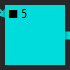
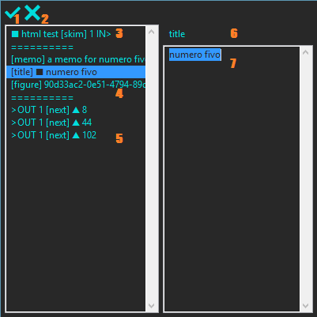
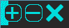
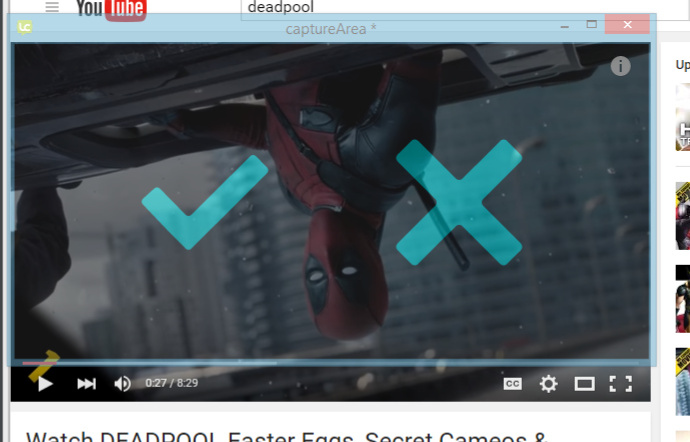

Howstr
Putting the 'easy' in hardware.
Project maintained by matthewmaier Hosted on GitHub Pages — Theme by mattgraham
Windows and Controls
- preInfo
 Preview indicating that if you releaes the left mouse button the node details for this node will open.
Preview indicating that if you releaes the left mouse button the node details for this node will open. - preFocus
 Preview indicating that if you releaes the left mouse button this node will become the "focused" node. When the graph is redrawn the algorithm will start at this node and work outwards. Any graph element not connected to the focus node by flow links will be placed in the miscellaneous pool at the bottom of the main window.
Preview indicating that if you releaes the left mouse button this node will become the "focused" node. When the graph is redrawn the algorithm will start at this node and work outwards. Any graph element not connected to the focus node by flow links will be placed in the miscellaneous pool at the bottom of the main window. - iconMediumsize
 Click this icon to make the main window take up part of the screen (instead of being minimized or maximized).
Click this icon to make the main window take up part of the screen (instead of being minimized or maximized). - iconClose
 Click this icon to close Howstr Desktop. You will be prompted to save if the current project has unsaved changes. The application always loads with a fresh project, which triggers the "do you want to save" prompt upon closing, but there is no need to save this default project.
Click this icon to close Howstr Desktop. You will be prompted to save if the current project has unsaved changes. The application always loads with a fresh project, which triggers the "do you want to save" prompt upon closing, but there is no need to save this default project. - iconHelp
 Click this icon to bring up helpful information. The helpfulness of the information may vary.
Click this icon to bring up helpful information. The helpfulness of the information may vary. - iconMaximize
 Click this icon to make the main window take up the whole screen.
Click this icon to make the main window take up the whole screen. - iconMinimize
 Click this icon to make the main window disappear. (It's like magic, but actually it's just advanced technology)
Click this icon to make the main window disappear. (It's like magic, but actually it's just advanced technology) - iconUndo
 Click this icon to undo the most recent change to the network. NotionAll is add-only, so this will add an event which negates the pointers to the last change. You can "undo" everything that has ever happend in a project by adding a sufficiently long string of undo events. You can then redo everything that ever happened, all the way back to where you started, as long as you don't add some new event (which would break the chain).
Click this icon to undo the most recent change to the network. NotionAll is add-only, so this will add an event which negates the pointers to the last change. You can "undo" everything that has ever happend in a project by adding a sufficiently long string of undo events. You can then redo everything that ever happened, all the way back to where you started, as long as you don't add some new event (which would break the chain). - Instructions Button
 Click this button to generate and export an up-to-date set of instructions. The instructions are algorithmically created out of the action groups in the network. The exported *.html file is placed into the project folder.
Click this button to generate and export an up-to-date set of instructions. The instructions are algorithmically created out of the action groups in the network. The exported *.html file is placed into the project folder. - Resources Button
 Click this button to generate and export an up-to-date list of resources. The resource list has inputs (a bill of materials), thruputs (any excess stuff not entirely used up during an action), and outputs (what the project creates). The exported *.html file is placed into the project folder. NOTE: the calculation does not distinguish between tools (stuff that gets reused, like a hammer) and materials (stuff that get used up, like nails). It should be obvious in most cases that you don't need dozens of hammers, but it is an incorrect multiple.
Click this button to generate and export an up-to-date list of resources. The resource list has inputs (a bill of materials), thruputs (any excess stuff not entirely used up during an action), and outputs (what the project creates). The exported *.html file is placed into the project folder. NOTE: the calculation does not distinguish between tools (stuff that gets reused, like a hammer) and materials (stuff that get used up, like nails). It should be obvious in most cases that you don't need dozens of hammers, but it is an incorrect multiple. - Save As Button
 Click this button to save the project under a new name.
Click this button to save the project under a new name. - Load Button
 Click this button to close the current project and open a previously saved project.
Click this button to close the current project and open a previously saved project. - Hide Button
 Click this button to hide the currently selected graph element(s). NotionAll is add-only, so nothing is ever deleted. Instead, the pointers that tell the algorithms to include it in the network are negated.
Click this button to hide the currently selected graph element(s). NotionAll is add-only, so nothing is ever deleted. Instead, the pointers that tell the algorithms to include it in the network are negated. - Tooltip Checkbox
 Check this box to have a tooltip follow the mouse and display the contents of the nodes and the weight of the links. Uncheck to dismiss the tooltip.
Check this box to have a tooltip follow the mouse and display the contents of the nodes and the weight of the links. Uncheck to dismiss the tooltip. - Case Button
 Click this button to bring up a prompt to change the title of the case node. The case node title is different from the file name of the project.
Click this button to bring up a prompt to change the title of the case node. The case node title is different from the file name of the project. - Busy Checkbox
 Some of the functions are intensive, so when they start they flag the system as "busy." In testing sometimes a function would get stuck, and so would the "busy" flag. If the user interface freezes, try checking and unchecking this box to clear the "busy" flag.
Some of the functions are intensive, so when they start they flag the system as "busy." In testing sometimes a function would get stuck, and so would the "busy" flag. If the user interface freezes, try checking and unchecking this box to clear the "busy" flag. - Miscellaneous Left Button
 Click this button to scroll the miscellanous pool left.
Click this button to scroll the miscellanous pool left. - Miscellaneous RIght Button
 Click this button to scroll the miscellanous pool Right.
Click this button to scroll the miscellanous pool Right. - Dive Link Button
 Click this button to create a dive link from the case node to the selected node. It's important for this link to be in the right place so the algorithms work. Basically, a dive link specifies the beginning of a project.
Click this button to create a dive link from the case node to the selected node. It's important for this link to be in the right place so the algorithms work. Basically, a dive link specifies the beginning of a project. - Rise Link Button
 Click this button to create a rise link from the selected node to the case node. It's important for this link to be in the right place so the algorithms work. Basically, a rise link specifies the end of a project.
Click this button to create a rise link from the selected node to the case node. It's important for this link to be in the right place so the algorithms work. Basically, a rise link specifies the end of a project. - Jeremy's Bug Checkbox
 Jeremy used Howstr on Linux. Jeremy's mouse didn't work correctly. Jeremy and Matt discovered that Linux increments the mouse button numbers by one. If your mouse buttons don't work correctly, try checking the box.
Jeremy used Howstr on Linux. Jeremy's mouse didn't work correctly. Jeremy and Matt discovered that Linux increments the mouse button numbers by one. If your mouse buttons don't work correctly, try checking the box. - Filename Label
 If the current project has been saved then its filename will appear here.
If the current project has been saved then its filename will appear here. - Selection Box
 Click and drag the right mouse button. Nodes and links are highlighted white when they're selected. Selecting a node automatically selects all of the links attached to it. Right click anywhere in the background to clear the selection.
Click and drag the right mouse button. Nodes and links are highlighted white when they're selected. Selecting a node automatically selects all of the links attached to it. Right click anywhere in the background to clear the selection. - Tooltip
 When the tooltip checkbox is checked the tooltip will follow the mouse around and display whatever is inside of the node/link the mouse hovers over.
When the tooltip checkbox is checked the tooltip will follow the mouse around and display whatever is inside of the node/link the mouse hovers over. - Node Graphic  Nodes are represented by boxes. States have a squre character and changes have a triangle character. They resize a bit to try to fit a preview of their contents.
- Flow Link Graphic
 Flow links specify precedence relationships and are drawn left-to-right. So the left thing has to happen before the right thing can happen. Another way to think of it is supply/demand. The stuff to the right demands something through the flow link and the stuff on the left supplies it through the flow link.
Flow links specify precedence relationships and are drawn left-to-right. So the left thing has to happen before the right thing can happen. Another way to think of it is supply/demand. The stuff to the right demands something through the flow link and the stuff on the left supplies it through the flow link. - Preview Graphics
 The network has to be constructed according to a certain pattern for the algorithms to work. Howstr makes building a canonical network easy by restricting you to a few correct options. The options are displayed in a preview. If a preview is showing, then releasing the mouse button will commit the preview. Move the mouse to directly under/over a node to clear the preview.
The network has to be constructed according to a certain pattern for the algorithms to work. Howstr makes building a canonical network easy by restricting you to a few correct options. The options are displayed in a preview. If a preview is showing, then releasing the mouse button will commit the preview. Move the mouse to directly under/over a node to clear the preview.
- Cancel Icon (2) the "X". Click this to abandon any changes and close the node details.
- Okay Icon (1) the "check mark". Click this to commit any changes and close the node details.
- Snap Capture Button (12) Click this button to capture a screenshot from the current capture area.
- Set Capture Area Button (11) Click this button to bring up the capture area so that it can be changed.
- Expand Image Button (10) Click this button to see a full-sized version of the image in Figure View.
- Clear Image Button (9) Click this button to clear out the image. If this image is already attached to the node, it will be removed from the node. If you cleared an image in error you can undo it, or click the cancel icon to close node details without commiting the clear.
- Load Image Button (8) Click this button to load an image from a file.
- Figure Preview (13) This is a preview of the image.
- Edit Tag Text (7) This field contains the text of tags like "title" and "memo". Editing the text in this field, and commiting it, will change the tag on the node.
- Tag Label (6) This field displays the name of the tag (cannot be edited).
- Tag List (3,4,5) This field displays the in-links, tags, and out-links belonging to this node. Click on an in-link (3) or an out-link (5) to change its weight. Click on a tag (4) to change its text or image.
|
|


|
- Zoom Out Buttn (-) The "minus" sign. Click this to make the image smaller.
- Zoom In Buttn (+) The "plus" sign. Click this to make the image bigger.
- Close Button (x) The "X". Click this to close the figure view.
|
|
 |
- Set Icon (✔) The "check". Click this to set the new capture area and close the capture area window.
- Cancel Icon (x) The "X". Click this to close the capture area window without changing the capture area.
|
|
 |
Actions
Terms
- Action Group An action group (or just 'action') consists, at a minimum, of one input state, one change, and one output state. The action is to change the previous state into the next state. There can be an unlimited number of input/output states but there will only be one change.
- Case Node The entire project you see in the main window is made up of nodes and links. There is an invisible node which contains the entire project. It might help to think of the window itself as this containing or "case" node. The case node title should be used to summarize the entire project. This title is optional and is not the same as the project's filename.
- Change Node A change node (or just 'change') is an addressable location along the precedence dimension which captures events that change the world. A change is true for a period of time. For example, if you start with bread, and want toast, the change would be using the toaster to cook the bread.
- Filename When Howstr saves a project to disk it needs a unique name for the file. This is complimentary to, but distinct from, the case node title. The filename is required; the case node title is optional.
- Focused Node The algorithm which draws the network assumes the network could be infinitly large. So the drawing process starts from a single node and works outwards by following flow links. The on-screen appearance of the network can vary not at all, a little bit, or dramatically, depending on which node is focused. For example, if one or more graph elements cannot be reached from the focused node, all of them will be placed in the miscellaneous pool. Changing the focused node does not change the project in any way; it only changes the way it's displayed at the moment.
- Miscellaneous Pool This is a row at the bottom of the main window which renders any and all nodes that can't be reached (by following flow links) from the focused node. It will not display links, but they're still in the network. Nodes in the misc pool work just like nodes in the main graph. Keep in mind that the alteration preview and commit logic relies on the relative positions of nodes on-screen. Use the left and right buttons to scroll the misc pool horizontally.
- NotionAll Howstr relies on a particular adjacency list schema to organize all of the nodes and links. NotionAll is a two-level network. The base layer is records pointing to each other. The working layer is nodes and links named according to whatever convention you want. So NotionAll is a superset of all possible relational networks. NotionAll is also an append-only ledger. The combination means that NotionAll can describe a network, and any arbitrary change to that network (including redefinition of its elements) and recreate the condition of the network at any point in its history.
- Precedence Dimension This is the primary dimension in Howstr. It captures the way some things have to happen before other things can happen. The relationship between previous things and next things is captured with flow links. Howstr manages the majority of flow links for the user.
- Preview The Hostr Desktop beta user interface speeds up the creation of canonical models by providing a limited set of pre-formatted additions. By moving the mouse with the button held down you can see what alteration you'd get if you released the buton. The preview logic is partly based on the relative on-screen positions of the network elements. For example, flow always goes left-to-right.
- Scope Dimension The primary dimension in Howstr Beta is the precedence dimension. The scope dimension refers to an orthogonal dimensions describing less and more detailed information. The case node is a less detailed description of the entire project graph. Basically, since it's one node, you describe the whole project in one sentence. The scope dimension follows a pair of links. The dive links go from the case node to all of the starting states and the rise links go from all of the ending states back to the case node. None of the throughput nodes get scope links. Howstr Beta relies on the user to manage most of the scope links.
- Selection You can select one or more graph elements to perform alterations. Selection a node automatically selects all links attached to it. You cannot select the focused node, mostly because if you hide it then the graph drawing will change dramatically, which can be disorienting. If you want to hide the focused node just focus on a different node and then select it.
- State Node A state node (or just 'state') is an addressable location along the precedence dimension which captures a set of definitions that are all true simultaneously. A state can technically describe a period of time, but only so long as none of the defintions changes in any significant way. For example, if you start with bread (that you intend to toast) the characteristics of the bread remain stable for a long time; bread is bread. Once toasted, the temperature of the toast will change quickly, so if the temperature is important (as for spreading butter) then it's noteworthy that the state "toast" wouldn't last very long. It might be important to distinguish between "hot toast" and "cold toast."
- Supply and Demand Every individual action group in Howstr can be described in terms of supply and demand. It's demand if you read from right-to-left (next backwards to previous). It's supply if you read from left-to-right (previous forwards to next). Any chain of actions works the same way. So as long as each individual action is described correctly, the entire project can be described automatically.
- Tags The graph elements in Howstr Beta can be tagged with a few pre-selected pieces of information. NotionAll supports any arbitrary tag, but dealing with that is complicated in practice and I haven't implemented support for it yet. At the moment, you can change the weight of a link (multiply it), and nodes can have a title (140 characters), memo, and image.